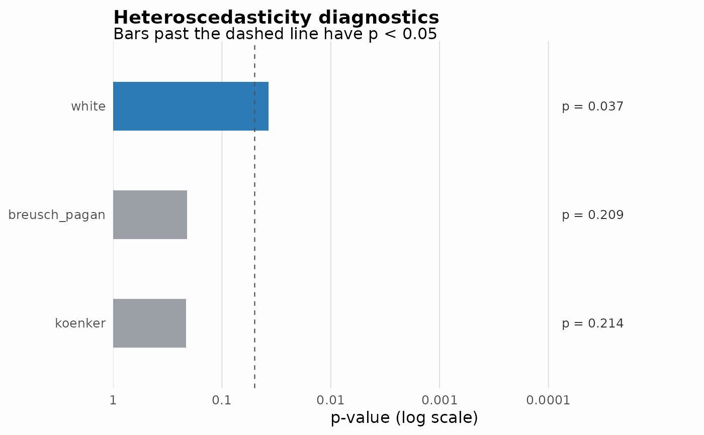

Draws one horizontal bar per test. The length of a bar is the evidence
against the null hypothesis, \(-\log_{10} p\), on an axis labelled with
the p-values themselves, so a smaller p-value gives a longer bar. A dashed
line marks alpha; bars that pass it are drawn in the accent colour and the
others in grey. The p-value of each test is printed beside its bar, so no
reading depends on colour.
Usage
# S3 method for class 'hetero_test_suite'
autoplot(object, ..., alpha = 0.05)
# S3 method for class 'hetero_grouped_suite'
autoplot(object, ..., alpha = 0.05)Details
Bars stop at \(p = 10^{-4}\): extra length beyond that would only
compress the tests that are near the threshold. Labels give the p-value to
three decimals, and p < 0.001 below that. A test that failed has no bar
and is labelled as such.
For a grouped suite there is one panel per group.
Earlier versions
Up to 0.12.0 the bars were the p-values themselves on a linear axis from 0 to 1, so a test that rejected had no visible bar, and the highlighting of significant tests was never applied to a suite of more than one test.
Examples
fit <- lm(mpg ~ wt + qsec, data = mtcars)
suite <- runHeteroTests(
fit, mtcars,
tests = c("white", "breusch_pagan", "koenker"),
progress = FALSE
)
#> [INFO] Running Koenker test
ggplot2::autoplot(suite)
